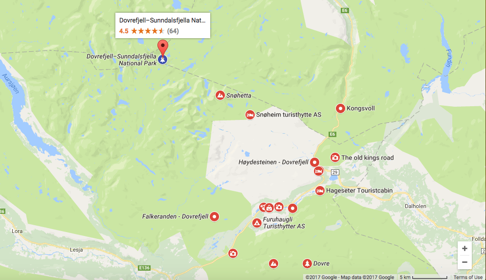
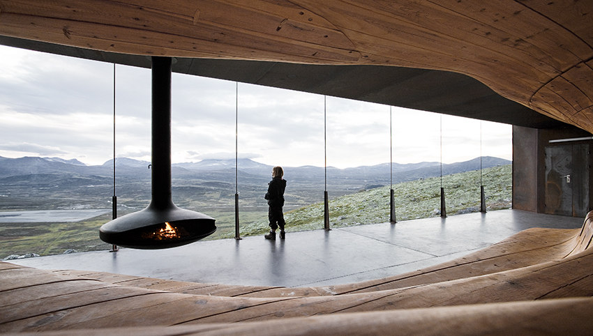

Where
Dovrefjell is known as a huge National Park in Norway. It forms a barrier between Eastern Norway and Trøndelag, which is the area around Trondheim.
This is Viewpoint Snøhetta. While being inside you have a full, clear and beautiful sight of the mountain Snøhetta and if your lucky, you will be able to see muskox. I have in fact been up there myself and walked several trips in the area of Dovre.
